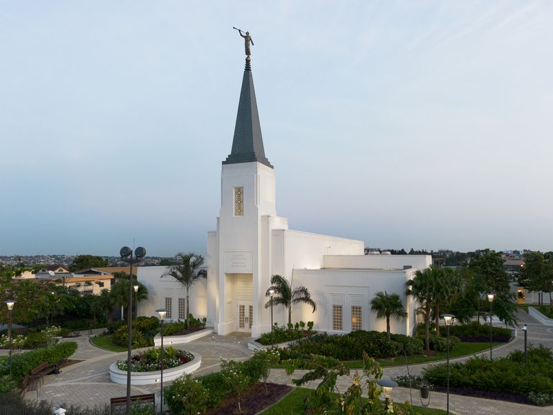

Abidjã, Costa do Marfim

Sobre o Templo
O Templo de Abidjã, Costa do Marfim é o sétimo templo construído na África e o primeiro
Dedicado em 25 de maio de 2025: Oração de Dedicação
Informações para Visitação
- Localização: Lot 118 Riviera Attoban Cocody Abidjan Côte d'Ivoire
- Horários: Verifique a programação de ordenanças
- Telefone: +225 25 22 0 18010
- Acomodações: Disponíveis